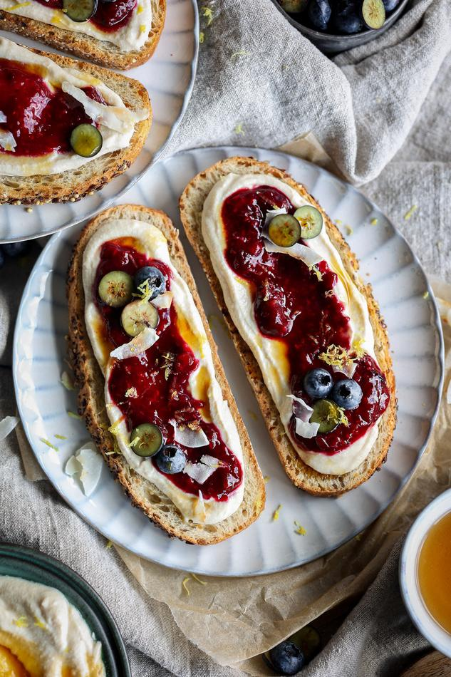

Vegan Whipped Ricotta Toast
-
 20 mins
20 mins
- Breakfast
- Snack
This tastes like cheesecake on toast. The vegan whipped ricotta is perfectly creamy and the lemon zest with cooked berries adds the right zing and sweetness. It's a delicious combination for a protein-rich breakfast or snack.

- Total
- 20 mins

- Prep
- 10 mins

- Cook
- 10 min